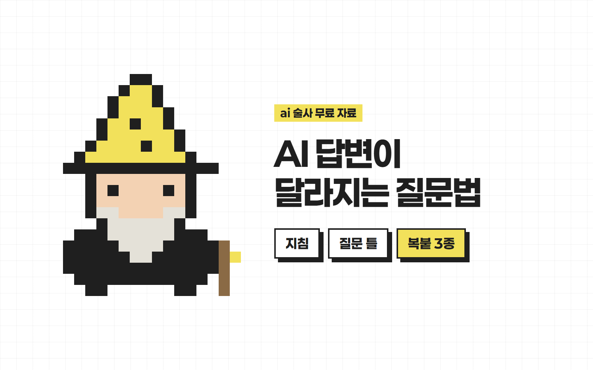

안녕하세요 ai 술사 성준입니다.
AI 답변이
달라지는 질문법
GPT한테 물어봤는데
대충 그럴듯한 답만 나온 적 있죠?
AI 실력보다 먼저 볼 건 시키는 방식이에요.
제가 쓰는 방법, 복붙으로 바로 쓰게 정리했어요.
준비물
- 1쓰던 AI 하나 GPT·제미나이·클로드 어디든 돼요
- 2자주 하는 일 하나 보고서, 고객 답장, 글 검토 같은 것
먼저 숫자부터 보세요
같은 AI도 시키는 방식에 따라 결과가 달라져요.
| 방식 (같은 챗GPT) | 수능 국어 |
|---|---|
| 시험지 통째로 + "정답만 말해" | 8점 (9등급) |
| 문항 세트별로 나눠서 제공 | 53점 (5등급) |
| 단계별 풀이와 근거 요구 | 95점 (1등급) |
진학사가 2026학년도 수능 국어로 한 실험(공통+화법과 작문 기준)이에요. 주는 형태와 지시가 함께 달랐고, 다른 모델·과목에서 같은 점수를 보장하진 않아요.
정답만 달라고 하지 말고 근거까지 쓰게 해요.
지침에 이 프롬프트를 넣어요
매번 안 말해도 답변 형식이 잡혀요.
- 1AI의 맞춤 지침 설정을 열어요.
- 2아래 내용을 붙여넣고 저장해요.
내가 자료를 주고 질문하면 이렇게 답해줘. 1. 결론을 먼저 말해줘. 2. 그렇게 판단한 근거가 자료 어디에 있는지 같이 써줘. 3. 자료에 없거나 확실하지 않은 내용은 '확인 필요'라고 표시해줘.
메뉴 이름은 앱 버전마다 달라요. GPT는 설정의 개인 맞춤 설정을 찾아보세요. '확인 필요' 표시가 있어도 중요한 내용은 직접 확인해요.
자료를 주면 결론, 근거, 확인 필요 순서로 답해요.
질문 공식은 3가지예요
목적, 핵심, 결과물만 말해요.
| 목적 | 그래서 내가 최종적으로 뭘 하려는 건지 |
| 핵심 | 여기서 가장 중요한 건 무엇인지 |
| 결과물 | 원하는 출력물 형식 |
AI한테 '그냥 알아서 해줘'라고 하면, 딱 그만한 결과물만 나옵니다.
그런데 목적과 핵심 요구사항을 주면, 그걸 꼭 달성하기 위한 방식으로 사고를 해요.
수능으로 따지면
수능 국어 1등급을 받는 게 목적이야. 지문에서 근거를 찾는 게 가장 중요해. 정답과 근거 문장을 같이 써줘.
이렇게 요구하면 사고 수준이 달라진다는 거죠.
복사해서 쓰는 틀
[목적] 내가 최종적으로 하려는 일: [핵심] 여기서 가장 중요한 것: [결과물] 원하는 출력물 형식 (표 / 3줄 / 문장 등): 답하기 전에 부족한 정보가 있으면 나한테 먼저 물어봐.
일할 때는 이렇게
사장님한테 보고할 거야. 매출 변화를 중심으로, 표로 정리해줘. 부족한 정보가 있으면 먼저 물어봐.
다시 물어보는 횟수가 줄어요.
상황별 복붙 3종
[ ] 칸만 바꾸면 돼요.
보고서 정리
사장님한테 보고할 거야. 아래 자료에서 매출 변화를 중심으로 봐줘. 결과물은 표로 만들어서 정리해줘. 답하기 전에 부족한 정보가 있으면 나한테 먼저 물어봐. [자료 붙여넣기]
고객 문의 답장
고객 문의에 답장할 거야. 고객은 [상황]으로 화가 난 상태야. 사과와 해결 방법을 중심으로 써줘. 결과물은 카톡으로 보낼 수 있게 5문장 이내로 써줘. 답하기 전에 부족한 정보가 있으면 나한테 먼저 물어봐. [문의 내용 붙여넣기]
올리기 전 글 검토
내가 쓴 글을 올리기 전에 확인할 거야. 틀린 사실, 빠진 근거, 어색한 문장을 중심으로 봐줘. 결과물은 표로, 고칠 곳 / 이유 / 수정안 순서로 써줘. 답하기 전에 부족한 정보가 있으면 나한테 먼저 물어봐. [글 붙여넣기]
상황만 바꿔서 계속 쓰면 돼요.
이럴 때 꺼내 쓰세요
- 답변이 뻔할 때 → STEP 3 공식 채우기
- 지어낸 말이 걱정될 때 → STEP 2 지침 넣기
- 매번 쓰는 일일 때 → STEP 4 틀 저장해두기
근거: 진학사 블랙라벨사업부 실험(2026학년도 수능 국어, 챗GPT). 기사 보기 STEP 2~4는 제가 쓰는 방식이고, 점수를 약속하지는 않아요.
궁금하신 점은 DM으로 편하게 물어봐 주세요 🪄
From. ai 술사 | 성준
ai술사의 모든 꿀팁 확인하기!